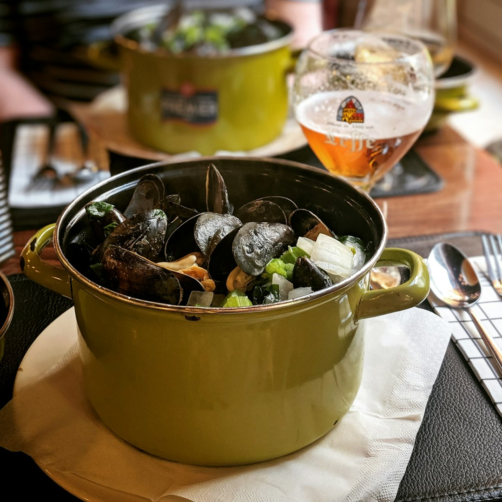
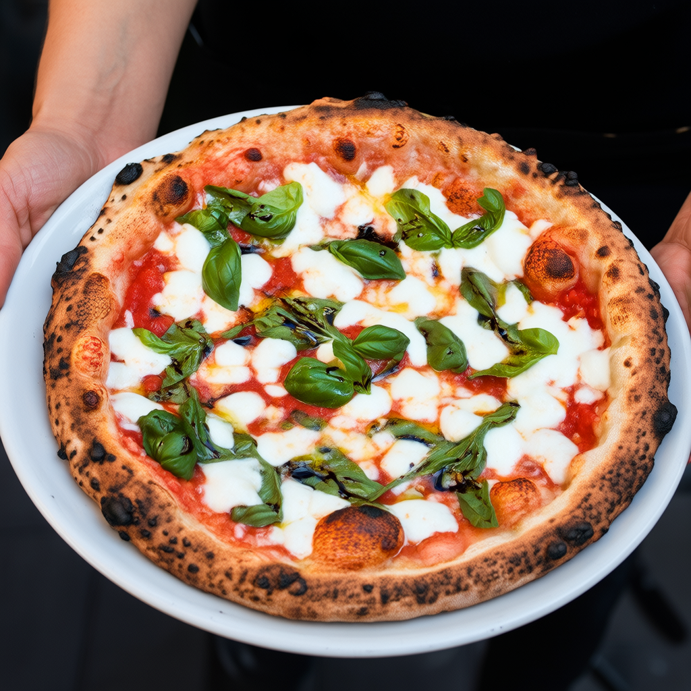
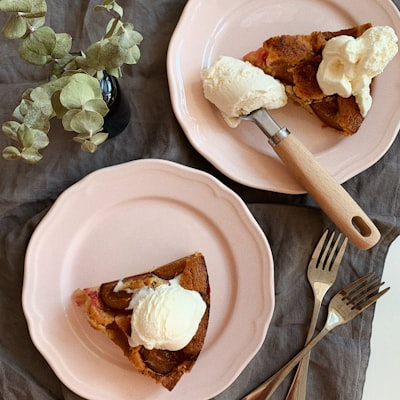
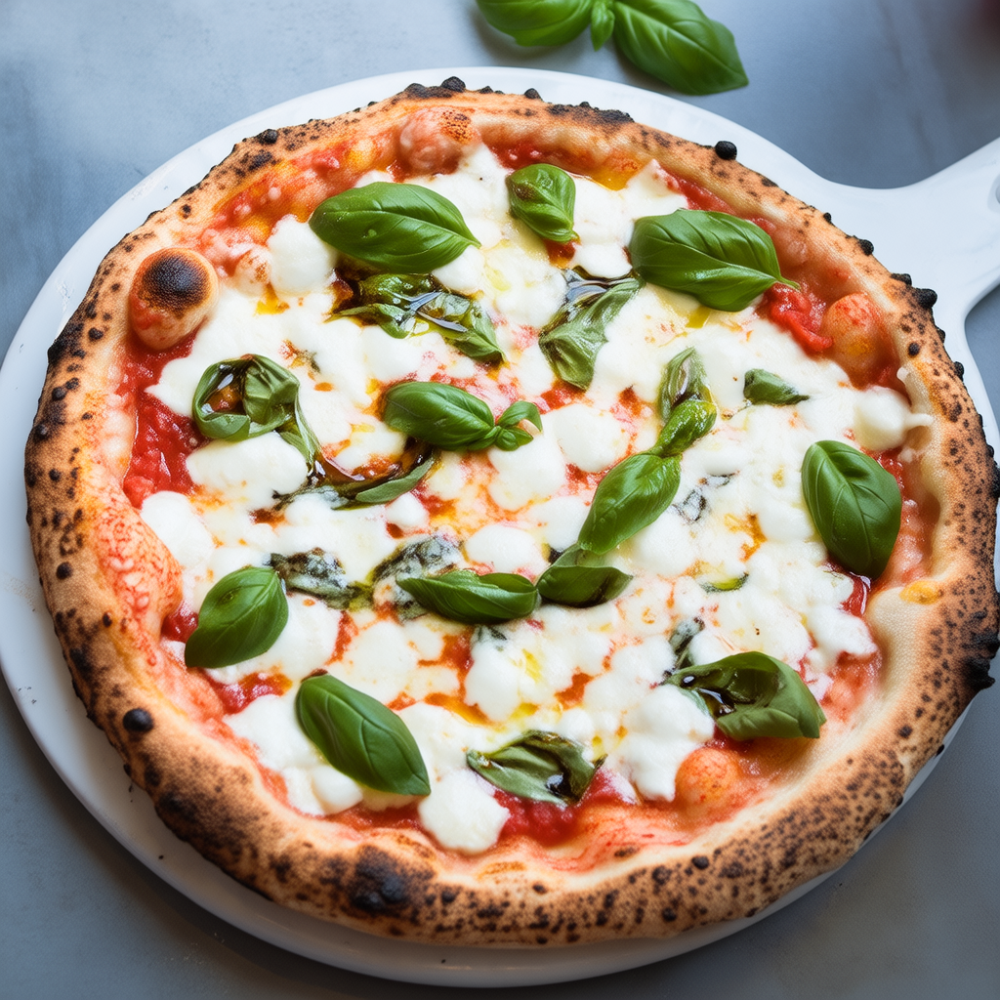
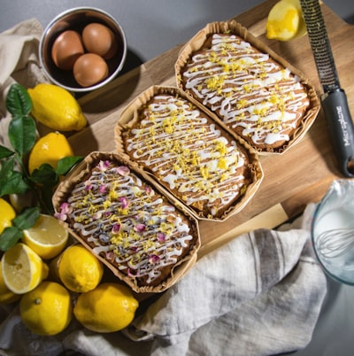

已识别 18 道菜，图片和点单建议会随菜单一起分享给同行的人。



这份菜单由 DishLens 翻译。列表和详情都可以直接查看，不需要登录。


淡菜用白酒、黄油、蒜和香草烹煮，汤汁鲜香，贝肉软嫩，适合配面包或薯条一起吃。
如果这桌有人喜欢海鲜，这道很值得保留。它的重点不只是淡菜本身，还有锅底汤汁，适合多人分享。
贝类过敏者需要避开。汤汁可能含黄油和白酒，介意酒精或乳制品的人点单前可以确认。